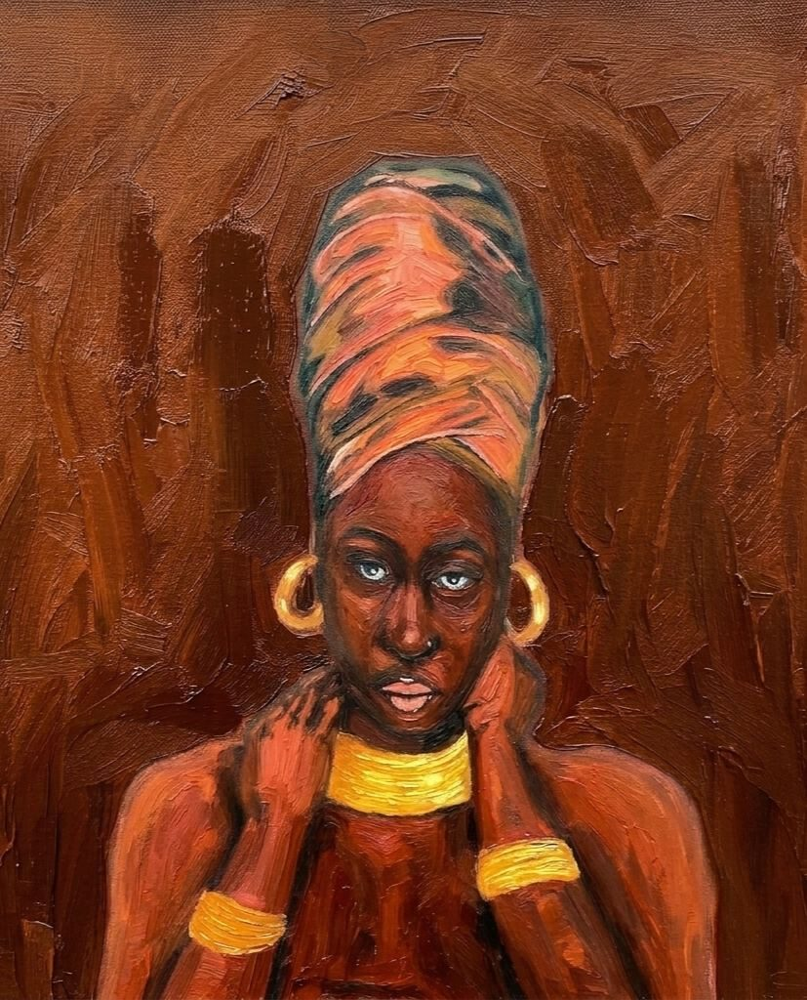
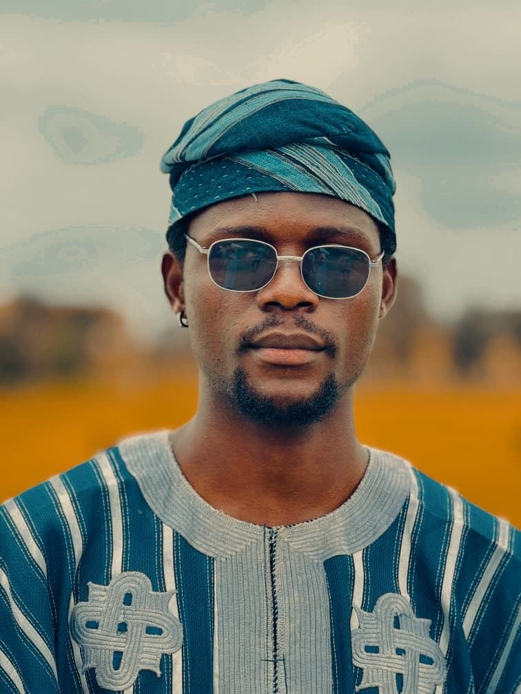

Design & Digital
Graphic design, website design and social media marketing for brands and projects, supported by photography and visual storytelling.
Artist Portfolio · 2026
An interdisciplinary practice exploring memory, identity, consciousness, African heritage, nature and becoming.
Sculpture · Painting · Drawing · Mixed Media · Photography · Textile

The Nubian Beauty
Oil on canvas

About the Artist
Born and raised in Ondo Town, Ondo State, Nigeria, with indigenous roots in Osun State, Oloyede James Kehinde developed an early sensitivity to the psychological, philosophical and aesthetic dimensions embedded within everyday life and community.
His interdisciplinary background, spanning Educational Psychology and Counselling alongside studies in Biochemistry, informs an artistic perspective that balances analytical inquiry with psychological awareness and visual intuition.
His practice is rooted in idealism and aesthetics, with a particular interest in the study and celebration of beauty within indigenous African culture, especially Yoruba tradition. He explores history, legends, heritage, moral philosophy, symbolism and ways of life.
Working across sculpture, textile art, pencil and charcoal drawing, painting, photography and mixed media, Kehinde employs different visual languages to investigate identity, beauty, memory, culture, existence and heritage. His work seeks not only to preserve cultural memory, but also to reinterpret and communicate it to contemporary audiences.
Curatorial Direction
Cultural memory and inner consciousness operate as interconnected fields.
Indigenous symbols, ancestral histories, the human figure, animal intelligence, biological transformation and abstract colour become instruments for examining what we inherit, remember, become and protect.
The works below are sequenced as a journey: from becoming and the human interior, through identity and emotional depth, into landscapes of memory and collective heritage, and onward to consciousness, ancient imagination and the mythology of Igbó Ọba. It moves from the personal to the collective, and from observation toward myth-making.
Selected Works
Documentary Work
Chronicles of the Forest Throne
Field drawings, portraits and oral-history-inspired imagination converge in Igbó Ọba, a conceptual kingdom situated within the symbolic architecture of the forest. Four lives, four perspectives, one kingdom in the trees. The project considers memory, kingship, guardianship and the movement between inherited worlds and the present.
Artist Statement
My practice is an ongoing attempt to understand how culture shapes perception and how art can preserve, reinterpret and communicate heritage. I move between indigenous histories, symbolic figures, nature and the interior world because no single medium or subject can contain the questions I pursue.
I am interested in the spaces between things: memory and forgetting, identity and becoming, darkness and illumination, tradition and progression, the individual and the collective. Through cross-hatching, colour, texture, assemblage, distortion and sculpture, I treat the visible world as a doorway into questions that are often invisible.
At the centre of my practice is a commitment to African cultural memory, especially Yoruba heritage, while remaining open to wider conversations about psychology, existence, nature and contemporary identity. My aim is not simply to look backward, but to carry what remains valuable forward.
“Art is a way of asking the questions that silence cannot answer.”
Oloyede James Kehinde
Beyond the Canvas
Graphic design, website design and social media marketing for brands and projects, supported by photography and visual storytelling.
Founder and brand developer of a fashion and campus-facing brand, covering identity, visual campaigns, styling and community outreach.
B.Ed. Educational Psychology and Counselling, Adeyemi Federal University of Education. NCE in Biology and Chemistry.
A counselling-oriented approach to learning, communication and collaboration, brought into creative work and community projects.